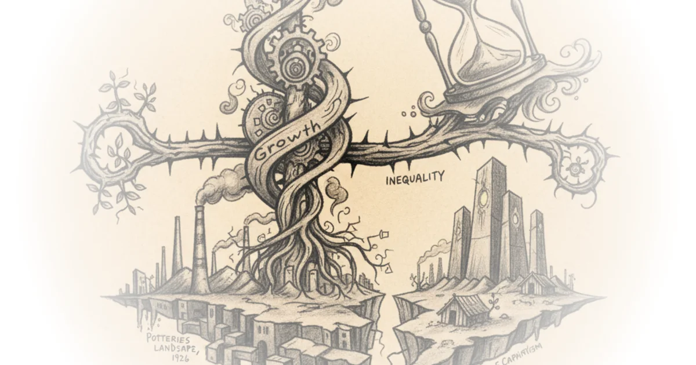

Does Superdeterminism save Quantum Mechanics? Or does it kill free will and destroy science? Sabine Hossenfelder · Sabine Hossenfelder ·Dec 18, 2021 · 16 min read · Science
Artificial starch from CO2. Ground breaking new tech could reduce land and water use by 90% Dave Borlace · Just Have a Think ·Dec 12, 2021 · 10 min read · Science
Department of Justice Files Suit Against Texas Waco Can't Wait · Waco Can't Wait ·Dec 12, 2021 · 13 min read · Housing & Cities
Third Times the Charm Waco Can't Wait · Waco Can't Wait ·Dec 5, 2021 · 13 min read · Housing & Cities
What Happened In Rome After Caesar's Assassination - Roman Documentary Kings and Generals · Kings and Generals ·Dec 2, 2021 · 19 min read · History
Most People Don't Know How Bikes Work Derek Muller · Veritasium ·Nov 28, 2021 · 10 min read · Science
How Caesar Won the Great Roman Civil War - Animated Documentary Kings and Generals · Kings and Generals ·Nov 28, 2021 · 124 min read · History
Caesar against Pompey - Great Roman Civil War Documentary Kings and Generals · Kings and Generals ·Nov 27, 2021 · 100 min read · History
Does anti-gravity explain dark matter? Sabine Hossenfelder · Sabine Hossenfelder ·Nov 27, 2021 · 10 min read · Science
Texas Redistricting in Review Waco Can't Wait · Waco Can't Wait ·Nov 24, 2021 · 15 min read · Housing & Cities
Growth, inequality, and the future of capitalism James Meadway · Pandemic Capitalism ·Nov 21, 2021 · 15 min read · Economics 
China's Billion Dollar New Energy IPO Asianometry · Asianometry ·Nov 18, 2021 · 10 min read · Economics
We need more than a Green New Deal James Meadway · Pandemic Capitalism ·Nov 14, 2021 · 15 min read · Economics
The Psychology of Racism in Jim Crow America Then & Now · Then & Now ·Nov 11, 2021 · 27 min read · History
Climate Kalecki, capitalist autonomy, and the non-ending of the world James Meadway · Pandemic Capitalism ·Nov 7, 2021 · 16 min read · Economics
WeeklyStream43: Superliminal Multiplayer Debut! Benn Jordan · Benn Jordan ·Nov 4, 2021 · 36 min read · Culture
Pessimism as a spur to action James Meadway · Pandemic Capitalism ·Oct 31, 2021 · 10 min read · Economics
The Delayed Choice Quantum Eraser, Debunked Sabine Hossenfelder · Sabine Hossenfelder ·Oct 30, 2021 · 10 min read · Science
Africa's most notorious warlords Shirvan Neftchi · CaspianReport ·Oct 28, 2021 · 10 min read · Foreign Policy
I Rented A Helicopter To Settle A Physics Debate Derek Muller · Veritasium ·Oct 27, 2021 · 10 min read · Science
#036: Oct 25th, 2021 - Longevity Marketcap Telemetry Nathan Cheng · Longevity Marketcap ·Oct 26, 2021 · 20 min read · Science
How the Romans Retook Constantinople - Pelagonia 1259 Documentary Kings and Generals · Kings and Generals ·Oct 24, 2021 · 19 min read · History
Optimism bias and the pandemic economy James Meadway · Pandemic Capitalism ·Oct 24, 2021 · 10 min read · Economics